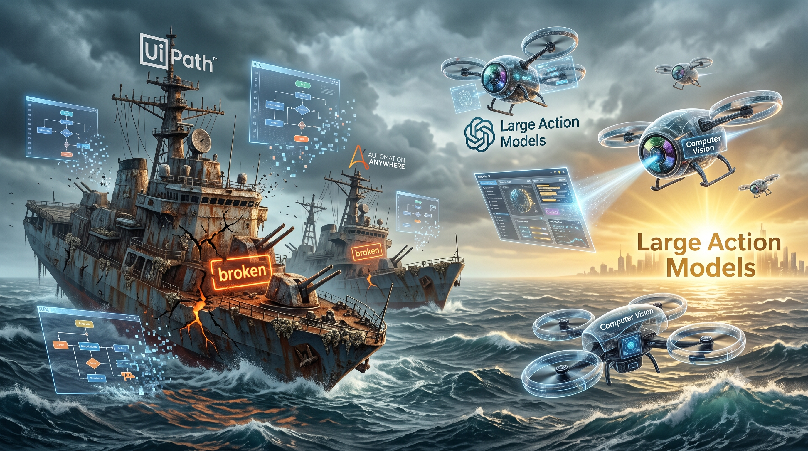
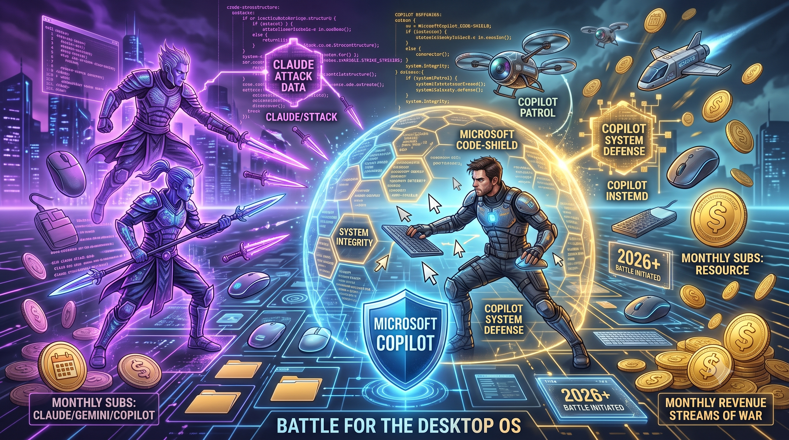
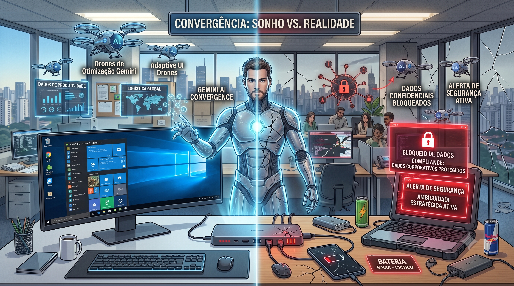
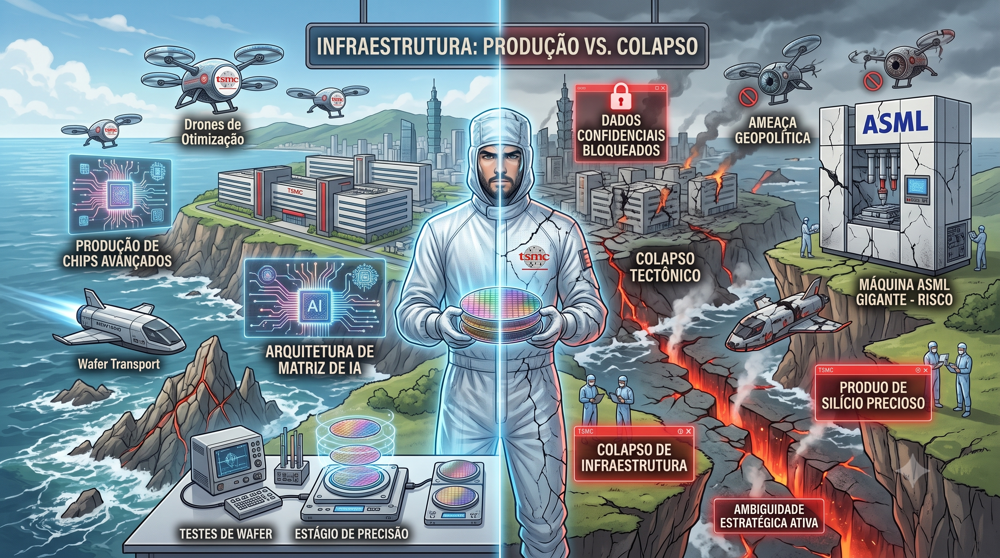
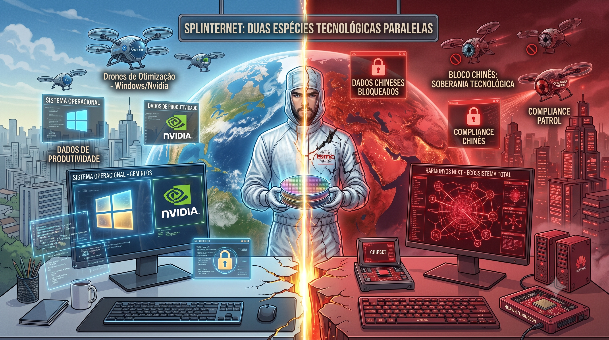

— Chamada e índice | 8 capítulos | Lançamentos de setembro a novembro de 2026
Capa editorial da série: a transição entre o trabalho de digitação de sintaxe operacional e a nova era da orquestração de silício e governança de contexto.
Estamos vivendo o choque do real na informática — e não há volta.
A era da sintaxe como valor terminou; o desenvolvedor entra agora no território da engenharia verdadeira. Com a IA interpretando telas e orquestrando sistemas em tempo real, as barreiras artificiais desmoronam e revelam a fundação material da computação.
Esta chamada inaugura a série Do RPA ao Silício: A Grande Transformação, uma narrativa ficcional com fundo de verdade técnica que percorre a evolução da automação, a guerra pelo domínio do desktop e a geopolítica do hardware.
Se você quer entender para onde o mercado de tecnologia está caminhando — com ceticismo, realismo e física do silício — este é o ponto de partida.
A transição do desenvolvedor de pedreiro digital e digitador de sintaxe para engenheiro e arquiteto de sistemas complexos.
O que sobra para o dev quando a IA programa, depura e orquestra? A resposta está na arquitetura de sistemas, design de missão crítica e engenharia de contexto.
Lançamento: 05/09/2026

A fragilidade dos fluxos de cliques rígidos do RPA tradicional sendo engolidos pela flexibilidade contextual de Large Action Models.
Por que ferramentas baseadas em regras de cliques fixos estão desmoronando sob o custo de manutenção e a chegada da flexibilidade dos Large Action Models (LAMs).
Lançamento: 12/09/2026
O fim do combo SAP + Excel + VBA: da automação artesanal rígida para a análise preditiva real com modelos de dados cognitivos.
Dos mega-projetos na Johnson & Johnson e Nokia em 2018 à extinção das macros estruturadas pelo processamento preditivo dinâmico de planilhas na memória.
Lançamento: 20/09/2026

O desktop corporativo como campo de batalha: a disputa das Big Techs para sequestrar o sistema operacional e a reação da Microsoft.
Por que a barreira econômica do Mac e a hostilidade cultural do Linux garantem o monopólio da Microsoft em meio ao manicômio tributário de SPED e validadores fiscais.
Lançamento: 03/10/2026

O mito da convergência absoluta: o smartphone substituindo o computador tradicional esbarra em limites de física, segurança e economia de nuvem.
Desmembrando o sonho de usar o celular como computador único. O gargalo da física (calor/bateria), compliance corporativo e os interesses financeiros das Big Techs.
Lançamento: 15/10/2026

O pêndulo histórico da informática e a fundação material do silício sob o monopólio geográfico de Taiwan e as máquinas da Holanda.
De onde viemos e para onde vamos: o pêndulo oscila de volta para a computação híbrida e local (SLMs). A geopolítica e o escudo físico de silício de Taiwan (TSMC/ASML).
Lançamento: 25/10/2026

A bifurcação global em dois planetas tecnológicos e a necessidade de flexibilidade geopolítica e contextual para o desenvolvedor do futuro.
A Diretriz 79 chinesa e a fragmentação da internet. A formação de dois blocos biológicos de computação paralelos e as novas oportunidades globais para o programador ocidental.
Lançamento: 09/11/2026
Cronograma de Lançamento: Chamada oficial em 25/08/2026 (esta página); Capítulos subsequentes lançados semanalmente, de 05/09/2026 a 09/11/2026.
Nota Editorial: Esta série de publicações constitui uma crônica de ficção especulativa construída com um fundo de verdade técnica e histórica. Os relatos e vivências operacionais retratados servem como alicerce empírico para analisar os trade-offs de infraestrutura, hardware e carreira no cenário atual do desenvolvimento.